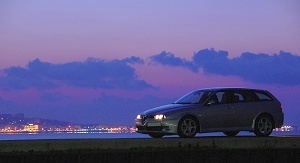
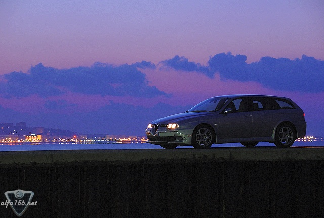
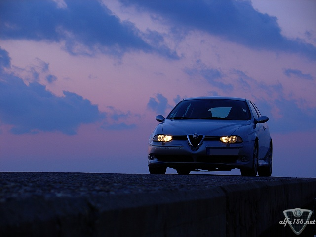
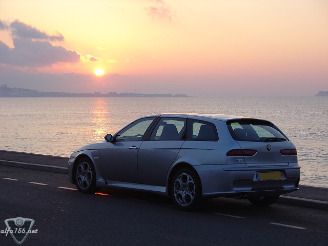

|
| .: 156 Owner profile, April :. |
| Name: Heimonen Forum nick: Pexi Age: 43 Gender: Male Location: Côte d'Azur, Southern France. Moved here some years ago from Finland. Occupation: Hired gun. |
 |



| .: 156 Owner profile, April :. |